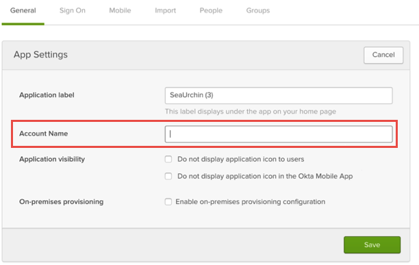
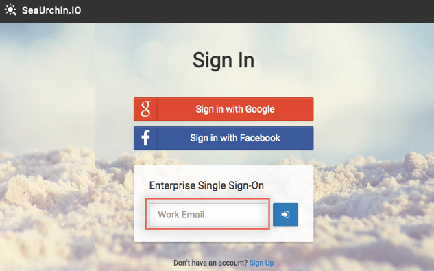

Send an email to SeaUrchin.IO Support at support@seaurchin.io and request that they enable SAML 2.0 for your account.
Attach the following:
Account Name: The name you will use for this account in Okta.
Identity Provider SSO URL: Copy and paste the following:
Sign into the Okta Admin Dashboard to generate this variable.
X.5.0.9 Certificate: Download and attach the following:
Sign into the Okta Admin Dashboard to generate this variable.
An Email Suffix: For example, *@okta.com (For SP-initiated flows from SeaUrchin.IO’s sign in page)
SeaUrchin.IO will process your request and send you a confirmation email.
In Okta, select the General tab for the SeaUrchin.IO app and enter the Account Name you provided to SeaUrchin.IO (step 2, above):

Click Save.
Done!
Notes:
IdP-initiated flows and SP-initiated flows are supported.
Just In Time (JIT) provisioning is not supported.
For SP-initiated flows:
Go to https://seaurchin.io/signin and enter your email address:
